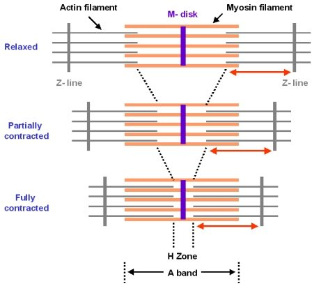
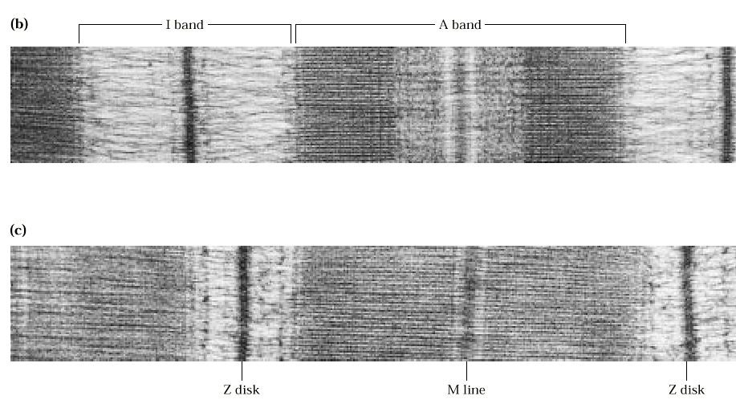
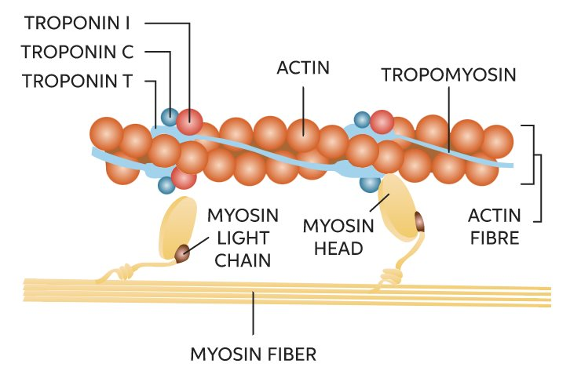
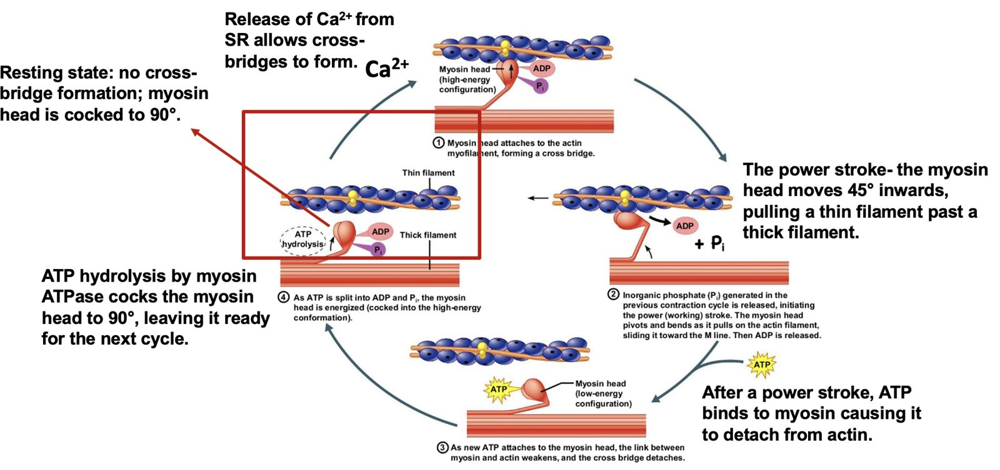
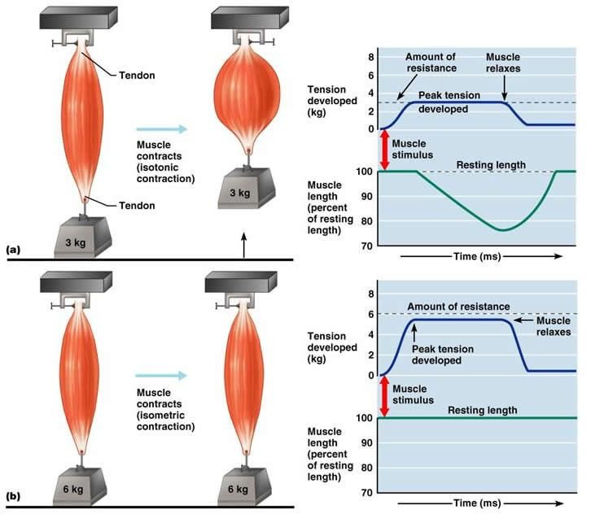
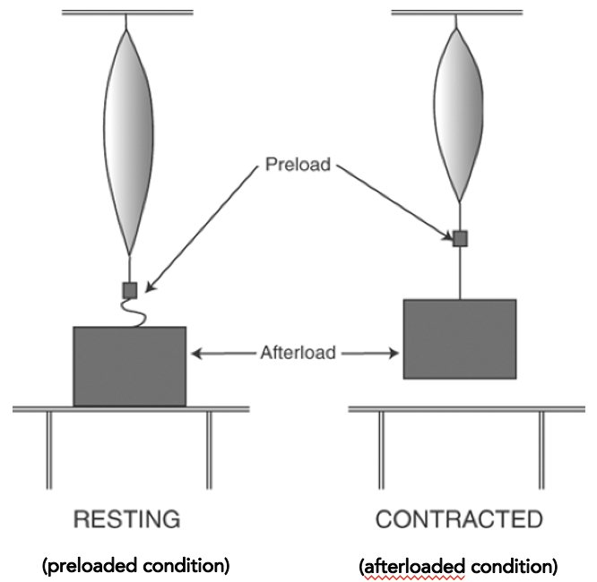
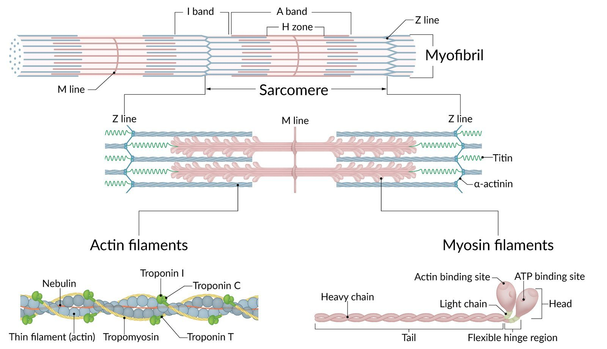

Slides 3–6 · sliding filaments, Ca²⁺, cross-bridges, preload vs afterload
Striated Muscle & Force Development
Cardiac vs skeletal muscle
- Both are striated and contract by sliding filaments.
- Cardiac fibres are branched and joined end to end by gap junctions — electrically coupled, so one SA-node impulse sweeps through the whole myocardium.
Sliding filaments
- Force comes from actin (thin) filaments sliding past myosin (thick) filaments.
- Contraction shortens the sarcomere (Z-disc to Z-disc).
- The A band stays the same width; the H zone and I band narrow.


Calcium turns it on
- Ca²⁺ binds troponin CThe troponin complex changes shape.
- Tropomyosin movesIt uncovers the myosin-binding site on actin.
- Cross-bridges form → power stroke at onceThe thin filaments are pulled inward. Force depends on how many cross-bridges are active at one time.


The cross-bridge cycle needs ATP
- At rest: no cross-bridges; myosin heads are energised and cocked at 90°.
- Power stroke: happens as soon as the bridge forms; ADP + Pi are released.
- Detach: a new ATP binds and the head lets go of actin.
- Re-cock: myosin ATPase hydrolyses ATP and returns the head to 90°.
- Cycling continues as long as Ca²⁺ stays high and ATP is available.

- Skeletal muscle: depolarisation-induced Ca²⁺ release — the voltage sensor pulls the SR channel open directly.
- Cardiac muscle: Ca²⁺-induced Ca²⁺ release. Ca²⁺ entering through L-type channels in the plateau (phase 2) opens ryanodine receptors (RyR2) on the SR.

Board add-on Relaxation: SERCA pumps Ca²⁺ back into the SR, and the Na⁺/Ca²⁺ exchanger pushes it out of the cell.
Preload, afterload, isotonic, isometric
| Term | Meaning | In the ventricle |
|---|---|---|
| Preload | Stretch on the muscle before it contracts. It sets the thin–thick filament overlap. | Filling: EDV / end-diastolic pressure |
| Afterload | The load that opposes shortening, met once contraction starts | Mainly aortic diastolic pressure |
| Isometric | Tension develops but the muscle can't shorten (like pushing a wall) | Isovolumic contraction |
| Isotonic | The muscle shortens and moves the load at constant tension | Ejection |


- Skeletal muscle in the body already sits at maximal filament overlap. Stretching it more only pulls filaments apart → less force.
- Cardiac muscle works on the ascending limb of the length–tension curve. More filling → more stretch → more overlap → more force.
- That is Starling's law (Topic 5).

Q (shown in class): A woman has had her thyroid removed. She now has perioral and fingertip tingling and hyperactive reflexes; hypocalcemia is suspected. Which step of skeletal-muscle contraction is most directly affected? (Options included guanylyl cyclase activity, Ca²⁺ binding to tropomyosin, a conformational change in troponin, and phosphorylation by myosin light-chain kinase.)
The Ca²⁺-driven conformational change in troponin (troponin C), which moves tropomyosin.
- Ca²⁺ never binds tropomyosin. Half of last year's class fell for this.
- MLCK phosphorylation is how smooth muscle works.
- Guanylyl cyclase plays no part in skeletal muscle contraction.
Q: On an electron micrograph, which sarcomere band keeps the same width during contraction?
The A band (the length of the thick filaments). The I band and H zone narrow, and Z-discs move closer together.